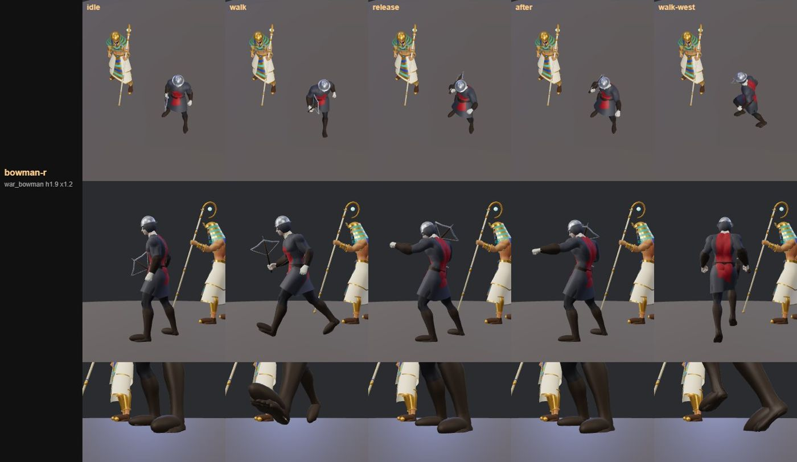
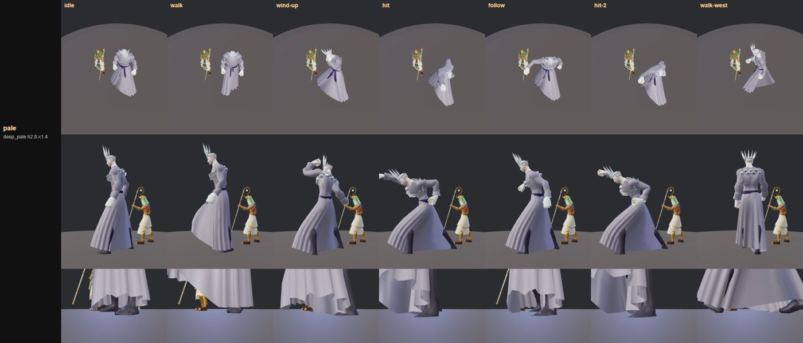
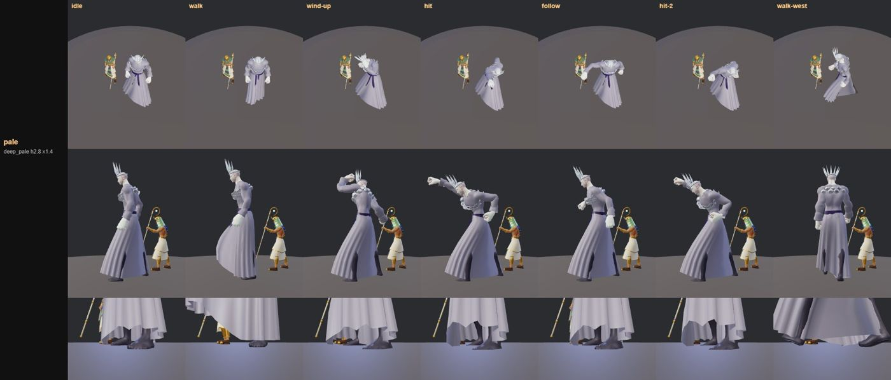
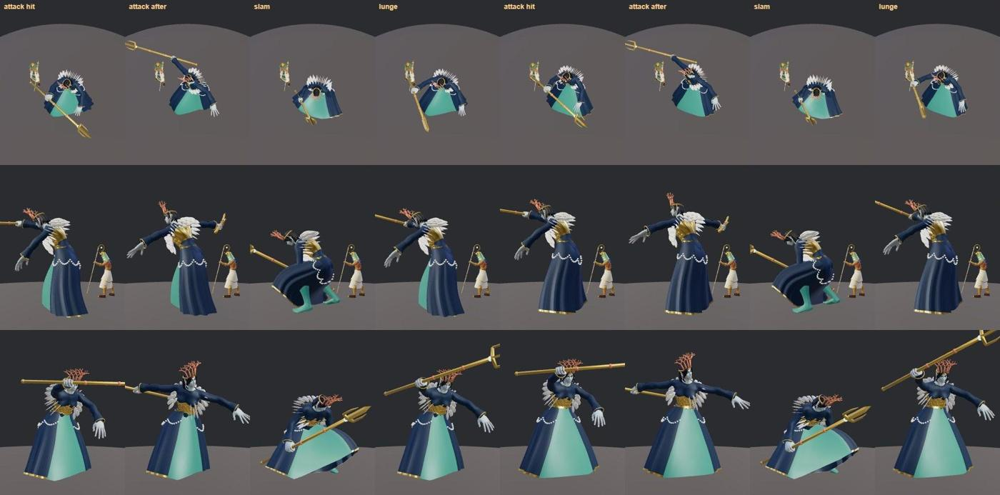
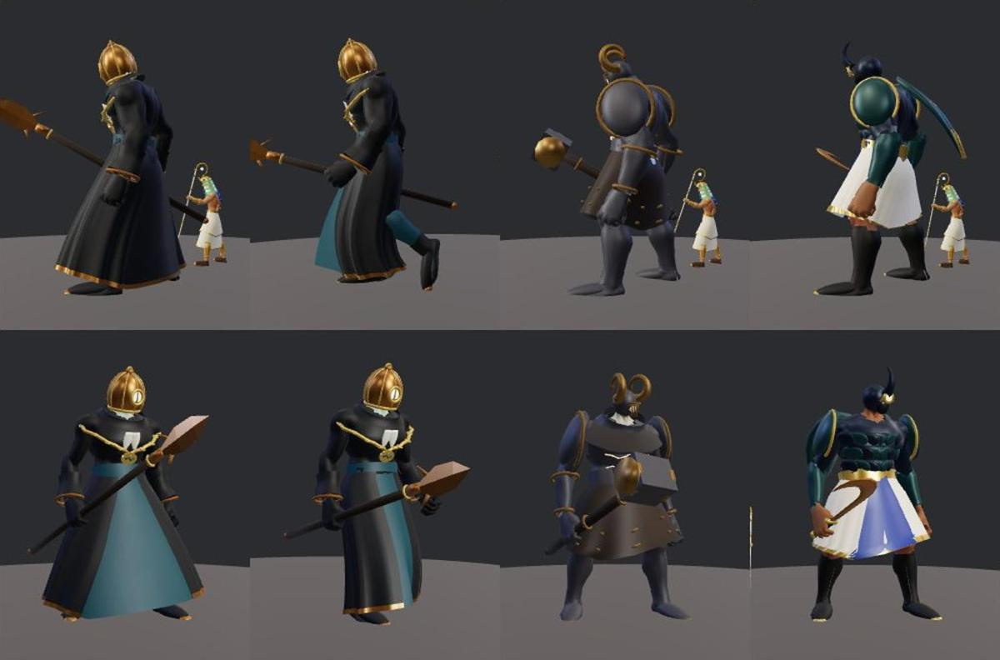
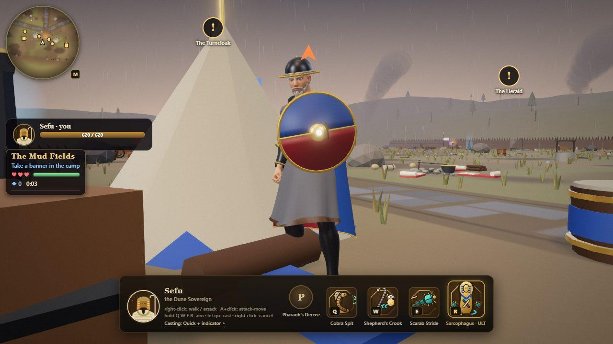
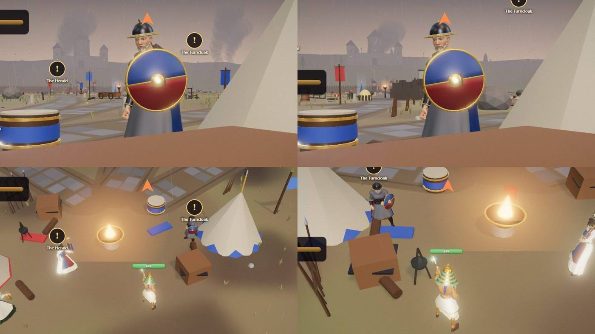
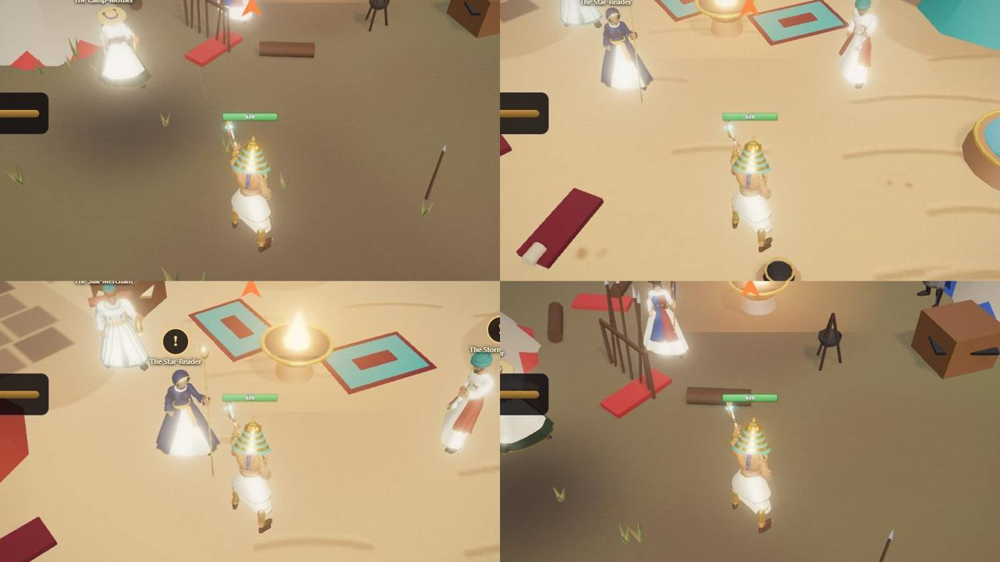

The model review, 2026-11-16
In short
The user (2026-11-16): "make the agents look at all models we made and correct them; there may be clipping or bad direction; make it so that they fit the scenes." This round: every model that is not a hero (another agent reviews the heroes).
Checked: the Climb's 55 (15 enemies in 24 looks, 15 rulers, 25 people), three of the Raid's four bosses, the 7 arenas in the heroes' style (139 props against their cover), the 5 weapons (used only by the VFX tool). Each in its own scene and through the moves it plays, beside Sefu, from the game's camera and close, with the feet, the lowest point and the facing measured.
Fixed in the game's code (5 faults, nothing a fight counts changed):
- The War's bowman punched with his empty left hand while his crossbow swung back over his shoulder: now he levels the crossbow.
- The Pale One's gown went 0.25 m through the ground at each blow: now it stays on it.
- Enemies that back away or circle the hero slid sideways on a forward walk: now they step the way they go (sideways moments 36 % to 17 %).
- The five rulers with a staff drove it two metres into the floor at every slam: now they plant it.
- The rulers' gowns and coats went up to half a metre into the floor at a blow: now within 0.2 m.


Waiting: three rebuilds for the Blender round (the Tide Judge's glaive through his gown, Ash's anvil off its cover in the Twin Forge, the harbour's cannons past their walls), one taste call for the user (people in cream glow), one placement for the floor reviewers (the Turncloak in a bench on floor 42). Not checked: the Heart of Noon.
The Climb's enemies (15 models, 24 looks)
Checked 2026-11-16. Every enemy look in src/tower/world/foeKinds.ts (the 15 models and the tinted or liveried looks that share them: the barnacle, the Dune Mother, the War's two armies, the ashen, the bearer, the deserter), each through the game's own pose code (foeModels.ts) at its unit's real size beside Sefu: standing, walking, its blow (wind-up, the moment it lands, the follow, a second blow) or its shot (the release and after), and a walk to the west. Three heroes went through the same code as the yardstick. Then four chapters in the game (floors 2, 12, 22, 32, 42), packs woken beside the hero and every unit sampled for five seconds: which way it faces against the way it goes and against its target.
Sheets, one row a look (top: the game's camera; middle: from the side, the figure's left; bottom: the feet at ground level): Sea, Wood, Sands, Deep, War, the heroes as the yardstick. Tools: pipeline/tools/foe-anim-sheet.js (the sheets and numbers), pipeline/tools/foe-world-probe.js (in the floors).


Found and fixed (in the game's code; no gameplay number changed, the fights replay the same)
- The War's bowman shot with the wrong arm. His shot played the pack's jab, a LEFT-hand punch: the empty left fist went at the target while the crossbow in his right hand swung back to his shoulder, pointing behind him. Now the cross (the right hand), so the crossbow is levelled at the target. Right hand at the release: 0.03 m in front of the hips before, 0.78 m after. Before:

After: - The Pale One's gown went through the ground at every blow. The hook takes a third of the legs, which drops the hips; on a floor-length gown the hem went 0.25 m into the floor. A new
legsshare per model (FoeModel.legs, 0.3 for the Pale One) keeps the hem on the ground: 0.06 m at the deepest moment (a 4.5 m figure). Before:
After:
- Units that back off or circle walked forwards sideways. The packs' tactics keep a unit facing its target while it moves (archers back off, the War's soldiers circle); the pack has only forward walks, so the feet stepped forwards while the unit slid sideways or backwards. Now a figure that goes backwards plays its stride backwards, and one that goes sideways turns its body up to about 50 degrees toward the way it goes (only the figure turns; the unit's facing, its blows and its bolts are the game's, and the turn is undone within about a fifth of a second when it strikes or shoots). Floor 42's crimson pack: 36 % of the moving moments had the hips turned more than 50 degrees from the way they went, 17 % after; the median 41 degrees, 25 after. Same fight, frame for frame.


Checked and left as they are
- Feet on the ground: every model stands where the heroes do. Standing, the soles go 3 to 7 % of the figure's height into the floor, the same as Sefu (3 %), Kaia (5 %) and Brannoc (7 %): it is the pack's idle stance (heels lowered on a flat foot), not a model. At the moment a blow lands it is 15 to 24 % for every figure that steps into it, heroes too. A floor-wide fix would belong in
src/motion/real.ts(the heroes' code) and is left for the hero review. - Facing: all face +Z as the game expects; walking west the feet point -77 to -94 degrees (west is -90). Standing, the feet of every figure, heroes included, point about 25 degrees to the right: the pack's guard stance.
- Held things: every weapon is in the right hand, every staff in the left (the thorn sprite's), the footmen's shields on the left arm, the net caster's and the slinger's throw is overhand with the right hand. The chief's glaive is swung overhead, as a glaive is.
- Size: the commons stand a little under a hero (the docker 2.07 m beside Sefu's 2.34), the big ones over two heroes high (the Harbourmaster's Mate 3.5 m, the moss giant 3.3 m), the Hollow Oak 8 m and the Dune Mother 7 m with her crest, as the floors scale them.
- Shadows: the model enemies cast none (
dressturns it off), the code-drawn ones do. Left: it was chosen for the phone's frame.
For the Blender round
Nothing that needs a rebuild was found on the enemies.
The Climb's rulers (15 models)
Checked 2026-11-16. Each ruler at its first floor's size and with its stand-in hero's way of striking (pieces/rulerModels.ts, pieces/ruler.ts), through the hero figure code it fights with (src/heroFigure.ts), beside Sefu: standing, walking, the basic attack (wind-up, hit, after) and each cast pose its moves use (thrust for the fan of light, swing for the cleave, slam for the turning fire, the tilting room and the tide, lunge, raise for the falling stones and the calls). Three views a frame: the game's camera, the side, the front. Each ruler was also seen in its own fight on its floor (the Drowned Captain in the harbour ring at 2.2 times a hero: in scale with the ring's props and the hero).
Sheets: the Sea, the Wood, the Sands, the Deep, the War. Tool: pipeline/tools/ruler-sheet.js.


Found and fixed (in the game's code; the fights' numbers and timings are unchanged)
- The five rulers with a staff drove it two metres into the floor at every slam (the Elder Root, the Thorn Mother (Briar Queen), the Prism Mother, the Lamp Warden, the Crow King). The slam plays the pack's landing, which swings the left arm down: the staff held upright in it went through the ground. Now a Climb figure holding a staff stands through a slam with the staff planted and the free hand raised (the ground still breaks around it).
- Gowns and long coats went into the floor at every blow and lunge (the Mother of Wrecks 0.46 m, the Tide Judge 0.41 m, the Brass Sphinx 0.34 m...). A Climb figure now takes 40 % of a blow's step instead of all of it (
CLIMB_LEGSinsrc/heroFigure.ts), so the hips do not drop as far: the hem stays within 0.2 m of the floor at the deepest moment, the feet sink 0.35 to 0.5 m at a lunge's deepest instead of 0.55 to 0.8.
Both apply only to a figure loaded from models/tower/ (the rulers; the people only stand); every hero moves as before.
Before (left) and after (right), the Elder Root: the attack, its follow, the slam, the lunge: The Mother of Wrecks, the same moments: 

The lowest point of each ruler other than its feet (a hem, a staff, a cloak), at its deepest moment, in metres at its floor's size, and its feet:
| Model | First floor's name | Size | Hold | Lowest, before | Lowest, after | Feet, before | Feet, after |
|---|---|---|---|---|---|---|---|
| sea_admiral | The Drowned Captain | x2.2 | - | -0.10 (attack after) | +0.01 (attack after) | -0.63 | -0.40 |
| sea_queen | Mother of Wrecks | x2.2 | - | -0.46 (attack after) | -0.16 (attack hit) | -0.53 | -0.35 |
| sea_judge | The Tide Judge | x2.28 | - | -0.41 (attack after) | -0.10 (attack after) | -0.67 | -0.42 |
| wood_elder | The Elder Root | x2.7 | torch | -2.28 (slam) | -0.17 (attack wind) | -0.72 | -0.47 |
| wood_briar | The Thorn Mother | x2.86 | torch | -2.21 (slam) | -0.20 (attack hit) | -0.70 | -0.46 |
| wood_antler | The Antler King | x2.88 | - | -0.10 (lunge) | +0.04 (lunge) | -0.76 | -0.48 |
| sands_scarab | The Scarab Colossus | x2.5 | - | -0.12 (attack after) | +0.01 (attack after) | -0.76 | -0.48 |
| sands_sphinx | The Brass Sphinx | x2.42 | - | -0.34 (attack after) | -0.04 (attack hit) | -0.71 | -0.44 |
| sands_jackal | The Glass Serpent | x2.5 | - | -0.09 (lunge) | +0.04 (lunge) | -0.63 | -0.39 |
| deep_prism | The Prism Mother | x2.6 | torch | -2.00 (slam) | -0.19 (lunge) | -0.57 | -0.38 |
| deep_lamp | The Lamp Warden | x2.56 | torch | -2.20 (slam) | -0.06 (lunge) | -0.62 | -0.41 |
| deep_seam | The Glass Abbot | x2.56 | - | -0.13 (attack after) | +0.01 (attack after) | -0.79 | -0.51 |
| war_marshal | The Last Marshal | x2.4 | - | -0.55 (slam) | -0.55 (slam) | -0.70 | -0.44 |
| war_siege | The Siege Lord | x2.43 | - | -0.13 (attack after) | +0.02 (attack after) | -0.76 | -0.49 |
| war_crow | The Crow King | x2.41 | torch | -1.96 (slam) | -0.23 (lunge) | -0.57 | -0.37 |
Left as they are
- The Last Marshal's cloak still goes 0.55 m into the floor at a slam (he holds no staff: the landing's crouch is the pack's own; taking less of it left the feet half-bent and lower). Seen from the game's camera it is a moment in a dust cloud.
- Facing and hands: all face the way they walk and turn to the hero; weapons in the right hand, staffs in the left; a ranged ruler with a staff (the Prism Mother, the Lamp Warden, the Crow King) thrusts it at the hero with its push, as designed.
- A ruler's basic attack is still its stand-in hero's (known since the models were made,
docs/tower/models/README.md).
For the Blender round
- The Tide Judge's glaive (
blender/tower/sea/judge.py, the harpoon-glaive): held at rest its haft runs back through the gown behind the right hip (it reaches 0.6 of its length behind the hand). Change the haft to start ato - d * 0.3 * sand the pommel ellipsoid too - d * 0.31 * s(lines 89-90), then rebuildsea.judge.

The Climb's people (25 models)
Checked 2026-11-16. Every person's spot on all 50 floors from the floors' data (246 people with the rivals: none stands inside cover, none faces cover within 1.6 m, all but one face within 60 degrees of the way the hero comes from the camp; the one is floor 31's rival Tempo, a hero, who faces away from the start at 17 m, as his scene has him). Then every person in the game on the chapters' first two floors (1, 2, 11, 12, 21, 22, 31, 32, 41, 42) and on 43 and 47: from the game's camera with the hero 6 m in front, and close from in front, with the feet measured.
Close-ups: the Sea and the Wood, the Sands and the Deep, the War. Tool: pipeline/tools/people-probe.js.


Found
Nothing to fix in the code: every person stands on the ground (the soles 3.6 to 6 cm into it, the heroes' 2.6 to 7 cm: the pack's stance), faces the camp, turns to the hero when the hero comes near, and holds its thing in the left hand (the Lamp-Bearer's lantern, the Firefly-Seller's yoke on the shoulders, the Turncloak's shield on the left arm).
- Placement, for the floor reviewers: on the made War floors the Turncloak (the camp's quest giver) stands in the camp's things: on floor 42 in the log bench (it runs through his right shin), on floor 43 against the tent's side. Move him about 1.2 m clear, toward the fire.


- A matter of taste, for the user: the people in cream (
#e2d6b8: the Sands' Star-Reader, Storm-Counter, Silk-Merchant and Glass-Seller, Beacon-Keeper, the War's Camp-Mother and Herald) glow in the Sands' and the War's light: the cream crosses the bloom's threshold, as Sefu's linen does a little.
If it should go: in Blender, each of those modules'R.mat("cream", "#e2d6b8", ...)to#cdbf9c(about 15 % darker), then the build command ofdocs/tower/models/README.mdfor those seven (war/herald.pyhas#e2d8c0).


The Raid's bosses (4 models: the Sun Warden, Ash, Ember, the Heart of Noon)
Checked 2026-11-16, three of the four, through their own pose code in their own rooms (pipeline/tools/boss-poses.js: idle, walking, each cast pose's wind-up and strike, the phases, kneeling, the fall), from the front and from the side as well as the game's camera, with the lowest point measured.
Front: the Sun Warden, Ash, Ember. Side: the Sun Warden, Ash (a pylon of the room stands between the camera and him).


Found
Nothing to fix. The Warden's base rests on the floor (its lowest point 3 cm under it, as a hero's sole) and sinks only in its fall, as built; Ash stands on his feet and knuckles and his plates fall away by phase; Ember floats with no legs, as designed. Each faces the way it casts. The red disc in front of Ash and Ember in the front views is the room's centre (its lava vent at the ring's middle), not their ring.
Not checked this round: the Heart of Noon (the boss pose tool does not take it; its own pictures are made by pipeline/tools/heart-phase-shots.py and heart-room-shots.py, last reviewed with its room).
The arenas' props and backdrops, and the weapons
Checked 2026-11-16.
The arenas in the heroes' style (7 files)
The duel arenas harbour, battlefield, canyon, cavern and the Raid's rooms sunburst (the Heart of Noon), sunhall (the Sun Warden's hall), twinforge (Ash and Ember): every prop laid against the obstacle it stands for (pipeline/tools/arena-fit.js; the layout's own rules are pipeline/tools/arena-check.mjs, which "cannot see the meshes"). A hero is kept 0.5 m from an obstacle's capsule (pushOut), so a mesh that reaches up to about 0.3 m past it is never touched; past 0.5 m a hero stands in it. All props stand on the floor (lowest points 0 to -0.56 m: bases sunk on purpose).
| Arena | Props | Fits | Found |
|---|---|---|---|
| Harbour | 9 | 7 | the two cannons reach 0.65 m past their walls at one end (a hero's feet go into the gun's end) |
| Battlefield | 9 | 9 | |
| Canyon | 9 | 9 | |
| Cavern | 9 | 9 | |
| Sunburst (the Heart's room) | 8 (39 fixed walls drawn by the room) | 4 | four low walls 0.41 m past their ends: touched, not entered |
| Sunhall (the Warden's hall) | 93 (45 fixed walls drawn by the hall) | 67 | pillar bases 0.4 to 0.48 m past their radius (touched); short walls stop a hero 0.4 to 0.5 m before their ends (the capsule's round end) |
| Twinforge (Ash and Ember's forge) | 2 (12 fixed walls drawn by the room) | 1 | Ash's great anvil reaches 1.27 m past its round cover on the east and stops 0.54 m short of it north and south: a hero walks into the anvil's horn, and is stopped a metre from its long side |
The older duel arenas (temple, frost, caldera, glade, skyruins) build their props onto the obstacles in code (*_props.glb instanced per obstacle), so they fit by construction; their backdrops stand outside the ring.
For the Blender round (the obstacles are gameplay and stay; the meshes move)
- Twinforge, the great anvil (
blender/arenas/real/twinforge.py, line 302):A.put("great_anvil", HOLD[0][0] - 0.6, Z(-HN + 4.2), yaw=0.0, scale=0.9): centred on its 1.75 m cover and a little smaller, the horn and heel then reach about 0.3 m past it on both ends. Then rebuild and check withpipeline/tools/arena-fit.js(cover0overunder 0.35). - Harbour, the two cannons (
blender/arenas/real/harbour.py,cannons()): the gun is 3.2 m long on a 2.7 m wall; atscale=S * 0.9instead ofS * 1.05it fits (or move it 0.3 m along the wall toward its short end). Rebuild, check cover5 and cover6.
The weapons (5 files)
public/models/weapons/ (the dragon sword, the ice sword, the guandao, the thunder hammer, the phoenix fan) are used only by the VFX tool's weapon effects (src/spells/weapons/, the attach points in src/effects/weapons/sockets.ts); no hero in the game holds one (the heroes' weapons are part of their own models). Not reviewed in the game for that reason.
For the Blender round
The model review (2026-11-16) did not run Blender. These need a rebuild; each with the model, the fault, its picture and the change.
- The Tide Judge's glaive (Climb ruler
sea_judge,blender/tower/sea/judge.pylines 89-90): at rest the haft runs back through the gown behind his right hip (0.6 of its length behind the hand). Changeo - d * 0.6 * stoo - d * 0.3 * s(the haft) ando - d * 0.61 * stoo - d * 0.31 * s(the pommel); rebuild withblender --background --factory-startup --python blender/tower/build.py -- sea.judge --out public/models/tower. Picture: rulers/long-weapons-at-rest.jpg (the first two). - Ash's great anvil in the Twin Forge (
blender/arenas/real/twinforge.pyline 302): it reaches 1.27 m past its round cover on the east (a hero walks into the horn) and stops 0.54 m short of it north and south. Change toA.put("great_anvil", HOLD[0][0] - 0.6, Z(-HN + 4.2), yaw=0.0, scale=0.9); rebuild the arena and check withpipeline/tools/arena-fit.js(twinforge cover0overunder 0.35). The cover stays (gameplay). - The harbour's two cannons (
blender/arenas/real/harbour.py,cannons()): a 3.2 m gun on a 2.7 m wall, 0.65 m past it at one end.scale=S * 0.9instead ofS * 1.05(or move it 0.3 m along the wall toward its short end); check covers 5 and 6. - Only if the user wants it (taste): the cream of seven of the Climb's people (
R.mat("cream", "#e2d6b8", ...)inblender/tower/sands/seer.py,counter.py,silk.py,glass.py,beacon.pyandblender/tower/war/camp.py;"#e2d8c0"inherald.py) to about 15 % darker (#cdbf9c): they bloom white in the Sands' and the War's light. Picture: people/bloom.jpg.
For the floor reviewers (placements, not models)
- The Turncloak in the War's made camps (the camp's quest giver,
giveron floors 42 to 49): on floor 42 he stands in the log bench (it runs through his right shin), on floor 43 against the tent's side. Move him about 1.2 m clear, toward the fire. Pictures: people/f42-turncloak-log.jpg, people/war-turncloak-spots.jpg (floor 43 and 47 close, floor 43 and 42 from the game's camera).
Every other person on floors 1, 2, 11, 12, 21, 22, 31, 32, 41 and 42 stands clear and faces the camp; from the data, none of the 246 people on the 50 floors stands in cover or faces cover within 1.6 m.